第一部分：現狀與觀念
一、前言：工作流程程中的時間損耗
痛點 1：競品分析資料散亂，難以收斂重點
翻閱數十個網站，時間花在蒐集資料而非思考產品策略，分析流於表面。
痛點 2：簡報排版手動調整，產能損耗高
手動搬運文圖導致格式跑版，設計師花時間處理對齊與字體，而非內容品質。
痛點 3：規劃人天與預估頁面太耗時間
手動拆解 Sitemap 與評估各頁面工時需耗費大量心力，且難以涵蓋所有特殊狀態，導致產出報價單的過程漫長且效率低下。
痛點 4：彙整想法，透過 Figma Make 快速製作視覺與高擬真頁面
傳統原型僅能表達功能架構，無法傳達任務進度條與勳章帶來的心理驅動力。這使得團隊難以在初期驗證「任務式設計」對提升使用率的實際效果。
痛點 5：手動整理設計系統極其耗時，難以從視覺產出逆向同步
在高保真視覺確認後，設計師仍需耗費大量勞務手動整理圖中的顏色、字體與元件規範。缺乏自動化機制將已確認的高擬真產出逆向匯出為設計系統 (Design System)。
二、核心方法論：混合工作流程程
設計師應專注決策，而非機械產出
我喜歡設計，但討厭為了找競品開 50 個分頁，討厭手動調整 PPT 排版。「適材適所」意味著讓 AI 處理結構化任務，設計師回歸策略層面。
「要做競品分析」 → 手動開 50 個分頁 → 複製貼上到 Figma → 資訊過載
「AI 廣搜，設計師擬定策略」 → Gemini Deep Research 掃描全球數據 → NotebookLM 篩選萃取關鍵表格 → 再由 Gemini Canvas / CLI 轉化為專業產出
第三部分：解決方案實戰
實戰案例：My FamiPort App 亮點獵取與任務佈局
研究核心：收集後續戰鬥所需的「任務子彈」
我們不再進行發散的功能比對，而是精準識別全球零售 App 如何透過「微型任務」驅動回訪。透過 AI 快速識別 GS25、全聯、日本超商等標竿的高頻互動機制，將其轉化為『我的專屬』改版所需的行為誘因素材庫。
動作：利用 Gemini Deep Research 掃描全球具備「高黏著度」的零售任務。如 GS25 的雲端寄取任務、日本超商的遊戲化集章等。
日本超商：遊戲化任務分析
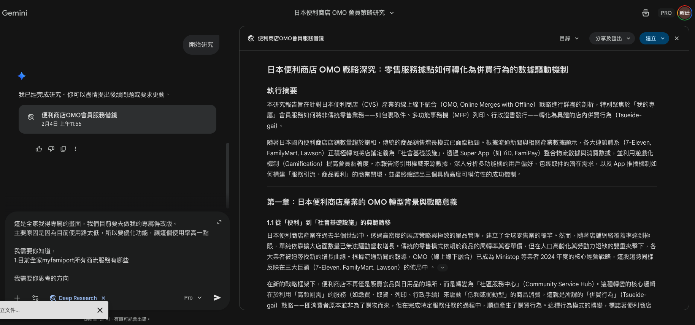
台灣零售：互動誘因分析
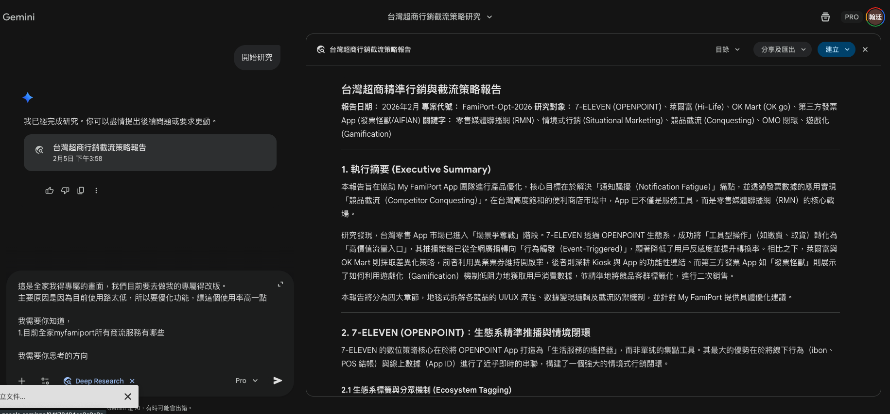
策略核心在於將體驗從「被動查詢工具」轉化為「智慧生活儀表板」，透過以下 10 個任務化模組，創造實質的使用者回訪率與商業價值。
1. Fami-Link 雲端列印快手
使用者情境: 趕時間的使用者進店只想趕快列印，不想在機台前手忙腳亂找代碼或擔心代碼過期。
介面設計概念: 參考動態島或首頁整合設計。平常隱藏，只要有上傳檔案，首頁最上方即出現卡片顯示文件就緒與一鍵開啟條碼。
誘因與機制: 等待不無聊。系統偵測到機台操作等待空檔時，彈出限時 10 分鐘的商品折價券。
解決之痛點: 解決代碼過期焦慮與機台前等待的尷尬斷點。
2. 賣家集章卡
使用者情境: 網拍小賣家希望每次寄件都有回饋感，以此增加選擇全家而非競品的動力。
介面設計概念: 參考集點貼紙畫面。在頁面中間設定數位集章卡，視覺模擬真實蓋章效果，顯示月寄件進度。
誘因與機制: 寄件馬拉松。集滿 10 件贈送商品，利用目標漸近心理促使賣家為了湊滿印章多寄一件。
解決之痛點: 解決寄件流程純勞務無獎勵的問題，留住高價值使用者。
3. 我的雲端冰箱
使用者情境: 騎機車的通勤族想買促銷優惠，但不想一次提走大量重物。
介面設計概念: 參考虛擬冰箱設計。改用圖像介面將已買未領的商品擺在架上，並標示過期剩餘天數。
誘因與機制: 怕浪費提醒。快過期時推播領取或轉送提示，利用損失規避心理引導使用者回店。
解決之痛點: 解決實體促銷拿不動的物理問題，創造必然的回訪機制。
4. 機台掃碼通
使用者情境: 討厭在機台螢幕上反覆點選與輸入代碼，希望透過手機掃描快速登入。
介面設計概念: 頁面右上方設定醒目的掃描圖示。掃描機台 QR Code 後，手機內的寄件資料即自動同步。
誘因與機制: 免接觸獎勵。推廣期間使用掃碼登入即贈送點數，養成使用者數位操作習慣。
解決之痛點: 徹底消滅手動輸入 10 碼代碼的低效體驗。
5. 超級一鍵通
使用者情境: 結帳時不想頻繁切換會員、發票與付款畫面，避免造成後方排隊壓力。
介面設計概念: 頁面右下角設定懸浮按鈕。點擊後直接彈出整合會員、載具、支付與優惠券的單一聚合碼。
誘因與機制: 透過極致效率產生的爽感，引導使用者將此頁面作為核心入口。
解決之痛點: 解決結帳時操作 App 的卡頓與排隊壓力。
6. 每日好運籤
使用者情境: 平常沒事不會開啟 App，但想要每天進來試試運氣並賺取小回饋。
介面設計概念: 頁面顯眼處設定扭蛋機或求籤筒互動模組。
誘因與機制: 試手氣。每天免費參與一次，利用變動獎勵機率提升日活躍使用者數。
解決之痛點: 解決工具類 App 低黏著度、無事不開啟的問題。
7. 繳費刮刮樂
使用者情境: 剛繳完高額帳單心情受影響，想要獲得一點驚喜感或心理補償。
介面設計概念: 偵測繳費完成後彈出數位收據，使用者可滑動螢幕體驗刮開銀漆的動畫效果。
誘因與機制: 驚喜回饋。將痛苦的支出行為轉化為期待中獎的遊戲互動。
解決之痛點: 解決繳費服務僅有負向情緒回饋的體驗斷層。
8. 包裹雷達
使用者情境: 常有網購需求，希望一眼確認待取包裹數量，方便下班順路領取。
介面設計概念: 儀表板顯示待取包裹件數卡片，並連結物流進度。
誘因與機制: 搬運補給。偵測到大件或多件包裹時自動產生飲品優惠券，提示搬重物辛苦了。
解決之痛點: 解決物流資訊不同步與忘記取件的問題。
9. 娛樂票夾
使用者情境: 準備參加大型活動，需要隨時確認票券狀態以確保安心入場。
介面設計概念: 數位票根圖案化呈現，點擊可翻面查看詳細座位資訊，模擬實體票券質感。
誘因與機制: 開場前導購。活動開始前根據場地位置推播周邊門市的咖啡優惠。
解決之痛點: 解決使用者對數位票券找不到或消失的不信任感。
10. 點數計算機
使用者情境: 擁有大量點數但不知道實際價值，導致缺乏兌換動力。
介面設計概念: 直接將點數數值換算為實質商品或現金價值。如顯示：等於 2 瓶綠茶。
誘因與機制: 目標進度。顯示距離下一個熱門獎勵的差距，刺激持續消費累積。
解決之痛點: 解決點數價值感模糊導致使用者不積極兌換的問題。
透過 AI 快速製作全家提案簡報
核心方法論：
1. NotebookLM：將大量研究報告壓縮為邏輯嚴密的簡報大綱。
2. Gemini Canvas：透過專業指令一鍵生成符合企業視覺規範的排版內容。
任務：在 NotebookLM 中完成方案優化後，要求 AI 以 Markdown 格式輸出「簡報大綱」，確保包含標題、內文點與核心效益。
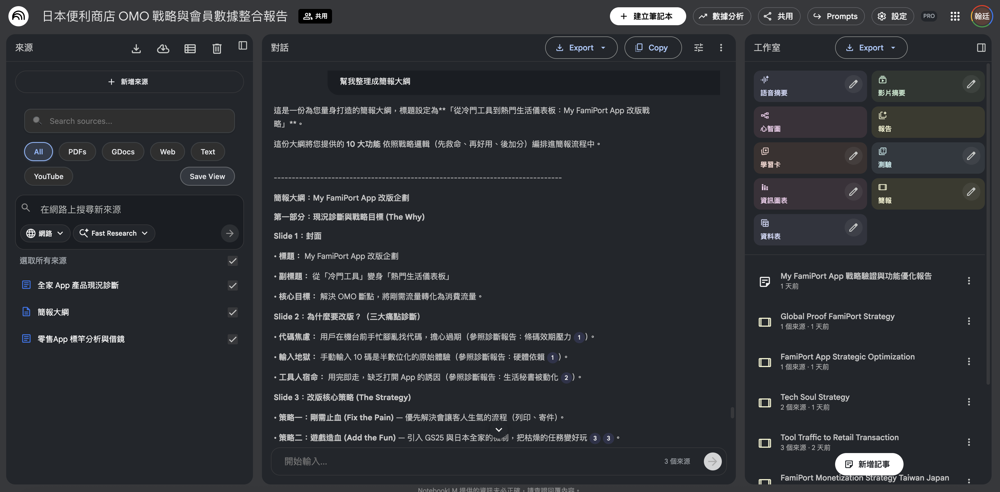
任務與成果：將 MD 內容貼入 Gemini 啟動 Canvas 模式，下達「PPT 製作專家」指令。AI 會依據安永視覺規範自動完成排版，設計師僅需最後檢核，省去 80% 的手工勞動。
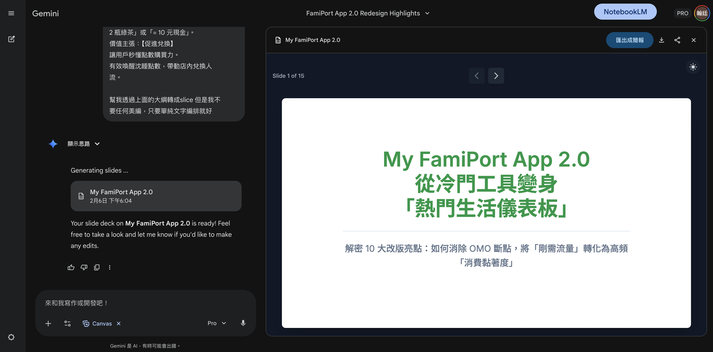
實戰案例：我的專屬新功能頁面評估與人天計算
核心方法論：
1. NotebookLM：負責「結構化」。將分散的產品亮點轉化為具備設計邏輯的頁面清單表格。
2. Gemini CLI：負責「自動化表格產出」。驅動 Project Architect Skill 依據專業 Excel 範本，自動補全設計細節並產出符合 6 欄位規範與 14pt 標準字級之 WBS 評估表。
🛠️ 查看 CLI Skill 配置細節 (6 欄位結構定義)
情境：將痛點一產出的亮點內容獨立存檔並匯入 NotebookLM，要求 AI 依據亮點轉化為精確的頁面清單與人天估算表格。
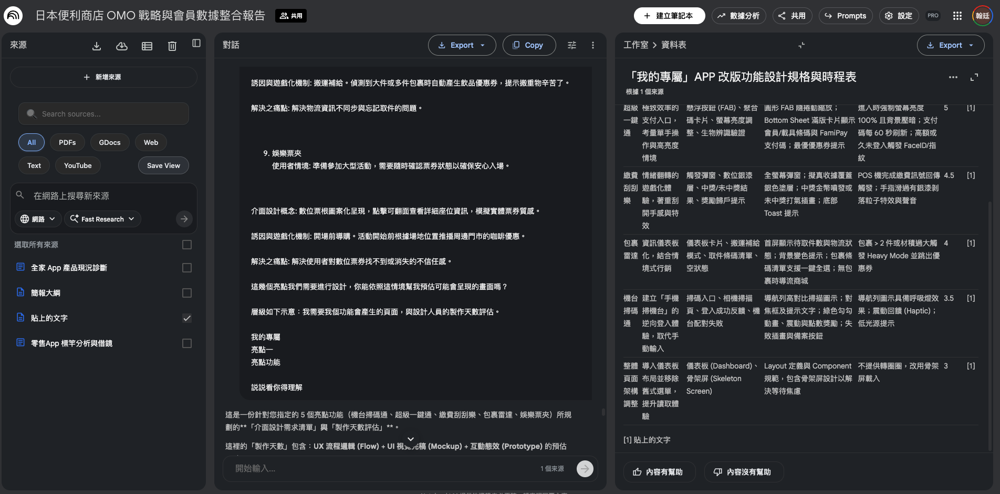
情境：將表格整個複製貼到 Gemini CLI 上面，製作 excel 表格。
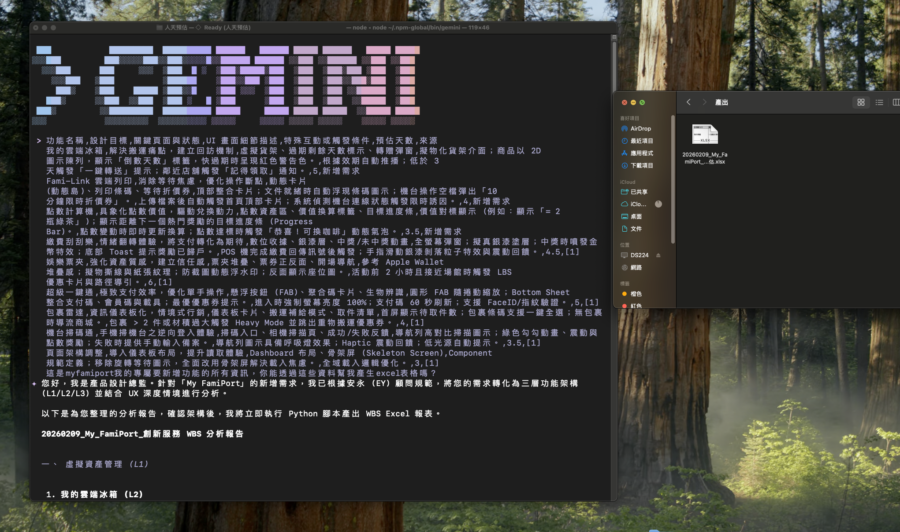
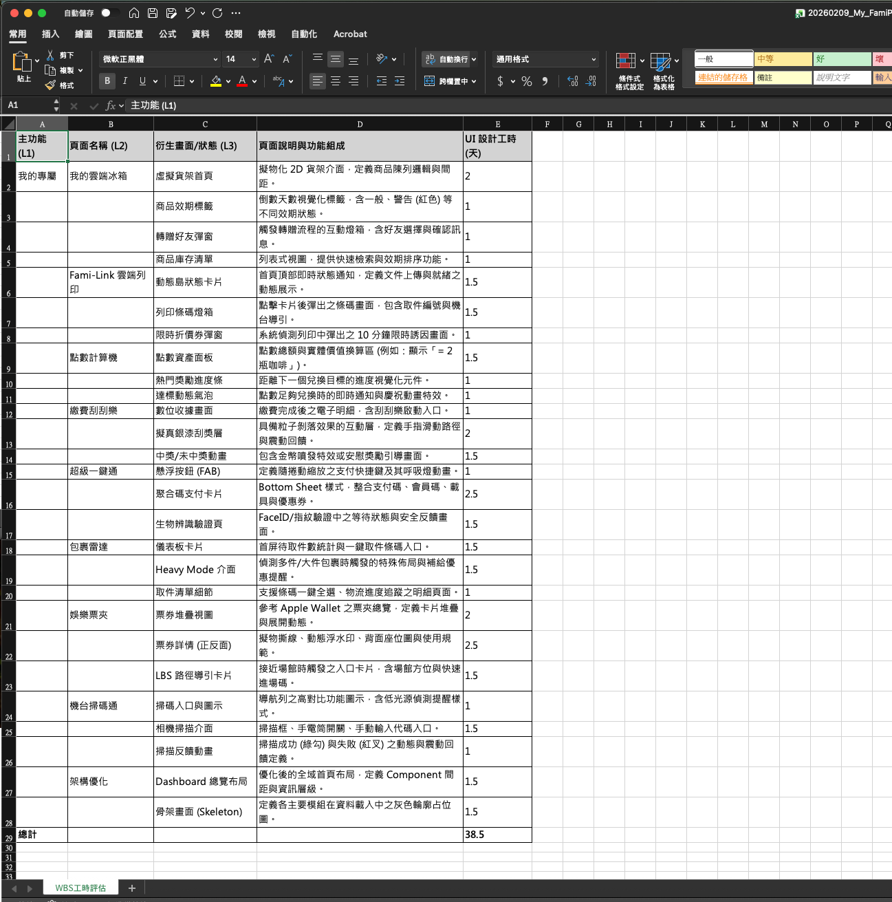
實戰案例：全家「我的專屬」從「私人秘書」升級為「主動式任務成就中心」
核心做法：從「領東西才開」變成「天天都想看」
原本只有在領商品時才點開的『我的專屬』，加入任務挑戰後，變成了天天都想點開的互動中心。透過 AI 快速做出真實畫面，我們能立刻驗證：領獎勵的快感，是否真的能讓大家主動想進來逛。
動作：將 NotebookLM 提煉出的優化方向與「生活儀表板」概念，直接交給 Figma Make 變成看得見、具備真實體感的高擬真畫面。
戰略規劃圖 (想法整合)

新版亮點：任務導向模式 (主動參與)
1. 常用服務
整合高頻功能
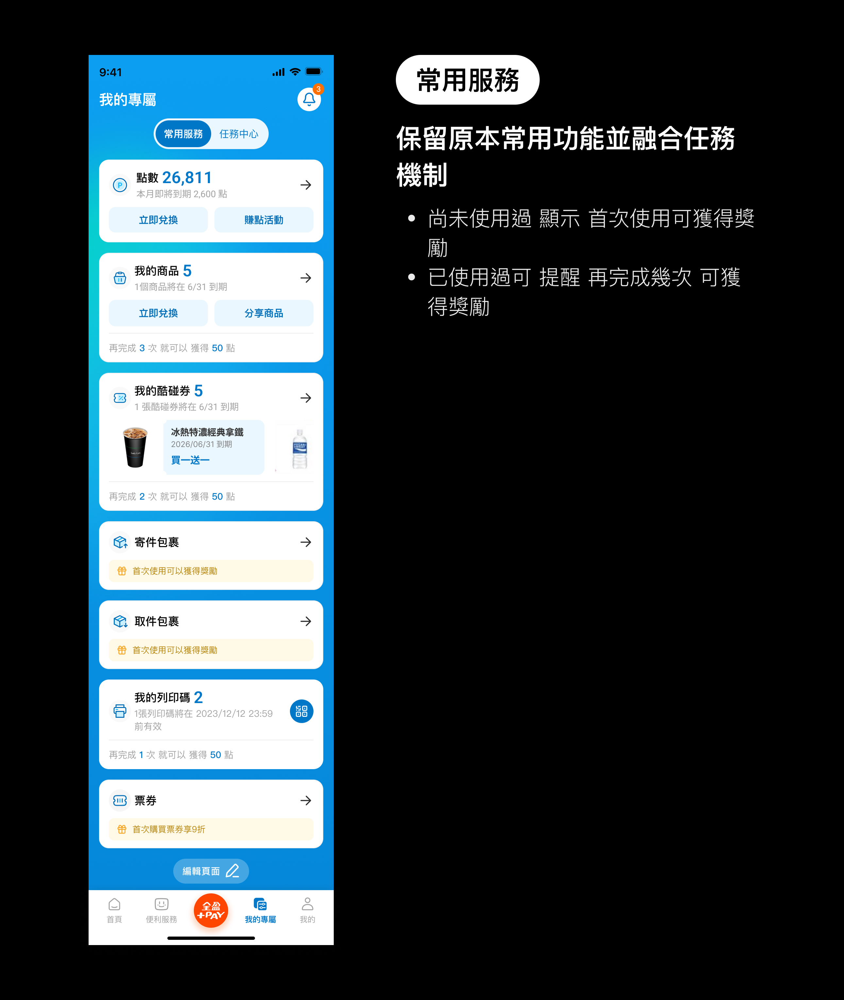
2. 任務中心
主動觸發回訪
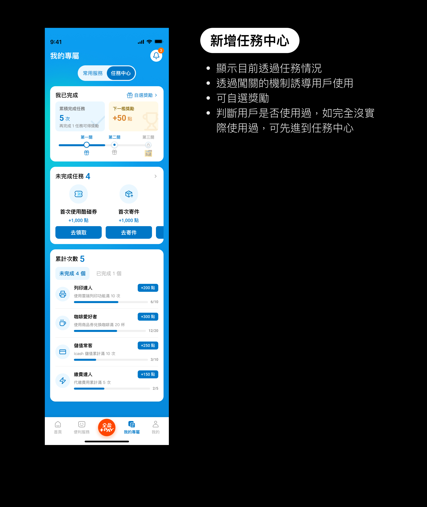
3. 自選獎勵
強化成就回饋
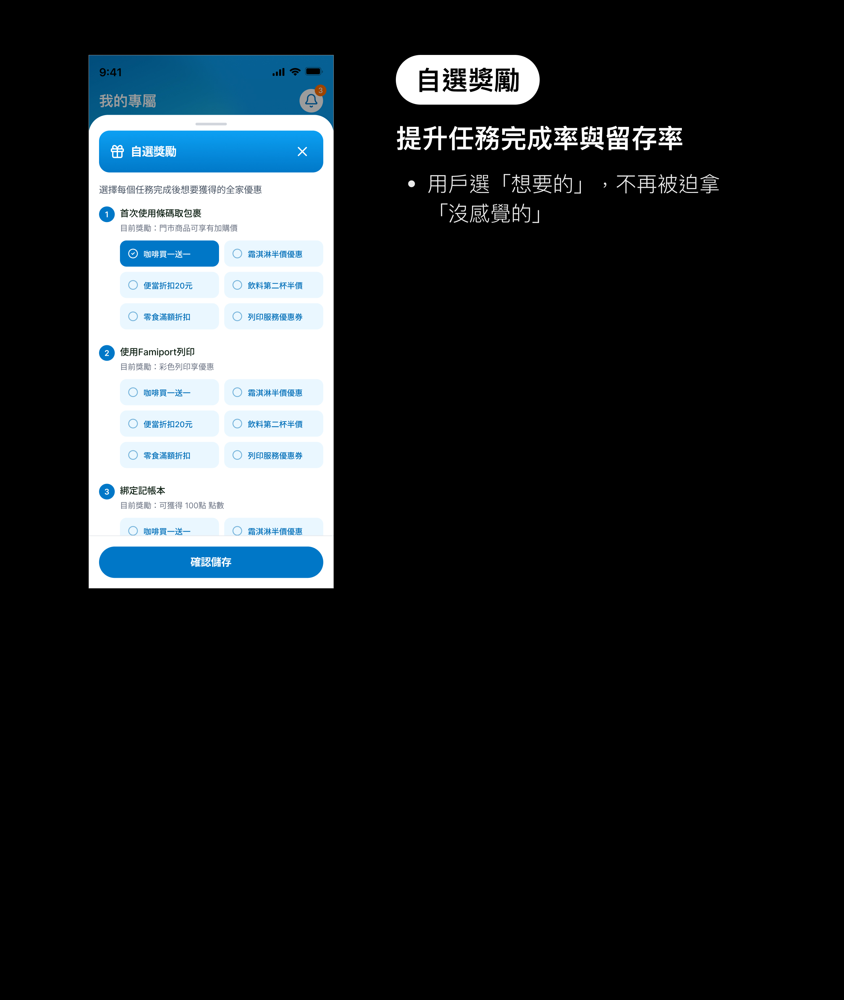
成果：透過對比分析，驗證了從「數位資產」轉向「任務激勵」能有效突破工具性陷阱。
| 維度 | 舊版設計 (資產管理模式) | 新版規劃 (任務導向模式) | 策略價值 |
|---|---|---|---|
| 1. 主要功能 | 數位資產：管理商品寄杯、酷碰券與消費進度。 例如：單純查看咖啡剩餘杯數、存放酷碰券。 |
生活儀表板：整合任務中心與主動式成就系統。 例如：追蹤「已完成 7 次任務」，查看「下一檻獎勵 +50 點」。 |
主動參與 |
| 2. 設計初衷 | 降低搜尋成本：方便櫃檯結帳時快速掌握資產。 例如：在櫃檯結帳前，快速開啟條碼進行兌換。 |
輔助決策與助力：將複雜資訊透明化，降低心理負擔。 例如：主動提醒「1個商品將在 6/31 到期」，輔助安排領取。 |
建立信任 |
| 3. 改版原因 | 工具性陷阱：非領東西不開啟，使用者使用率低下。 例如：只有在進店準備取貨時，才會點開此頁面。 |
提振使用率 (DAU)：創造任務誘因，吸引主動回訪。 例如：為了看下一檻集章進度，即使沒進店也會點開。 |
強化黏著 |
實戰案例：自動化產出設計規範 —— 將網頁資料轉為 Guideline
核心做法：從完成的網頁直接產生規範文件
在 Figma Make 完成高擬真網頁後，利用 Claude 讀取網站的程式碼與樣式數據，直接產出設計規範 (Design System)，解決手動整理元件與樣式的時間損耗。
說明：免去人工排版與對齊的勞務損耗。AI 自動識別網頁底層的顏色 Token、字體級距與元件屬性，產出包含原子元件與使用指南的專業 Guideline，確保設計與開發 100% 同步。
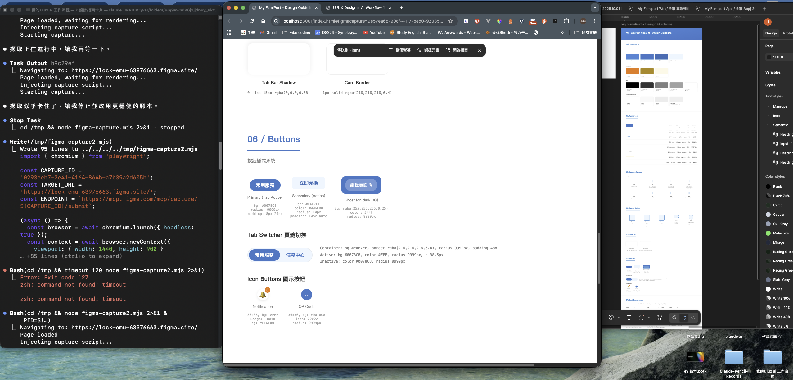
查看自動產出的設計規範 (Guideline)